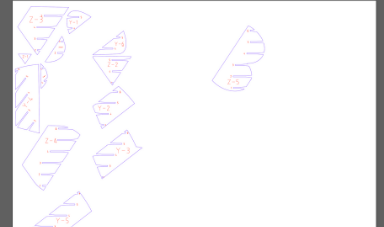
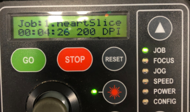

Slicer Mini
Designing the Model in Fusion 360
Here I designed a heart using Fusion 360 to be sliced. To make the heart I stimple made two line at an angle as seen in the first image and set the size of one and constrained them to be the same size. The I added two circles on top of the lines and I constrained the circles to each be tangential to one other line. I then constrained the circles to be the same size and constrained them to each be coincident to end point of each line. Finally I set the circles and appropriate size then extruded the heart to make the final model.
Here I designed a heart using Fusion 360 to be sliced. To make the heart I stimple made two line at an angle as seen in the first image and set the size of one and constrained them to be the same size. The I added two circles on top of the lines and I constrained the circles to each be tangential to one other line. I then constrained the circles to be the same size and constrained them to each be coincident to end point of each line. Finally I set the circles and appropriate size then extruded the heart to make the final model.
Constrained Base Triangle
Adding Two Tangential Circles
Constraining Circles
Resizing Circles
Extruding Heart
Final Model
Slicing Model in Fusion Slicer
First the model from Fusion 360 was imported into Fusion Slicer. Then I created a new material I called Makerspace Cardboard the size and width of the cardboard we own. I then set the model to interlocked slices and set there to be six slices on each axis. I then rotated the axis for the slices to make a cooler shaped heart and so that it can fit into the cardboards. This makes the final model to then be exported as a DXF to Illustrator to be laser cut.
First the model from Fusion 360 was imported into Fusion Slicer. Then I created a new material I called Makerspace Cardboard the size and width of the cardboard we own. I then set the model to interlocked slices and set there to be six slices on each axis. I then rotated the axis for the slices to make a cooler shaped heart and so that it can fit into the cardboards. This makes the final model to then be exported as a DXF to Illustrator to be laser cut.
Importing Model into Fusion Slicer
Setting Material Settings
Creating 12 total Slices
Sliced Model
Rotating Slices
Final Sliced Model
Nesting Models in Illustrator
Due to the slices not being well placed when coming from Fusion Slicer we import in the slices into Illustrator then move them to reduce the amount of space they take up. I aimed to put all the sliced on the left side, so I can save 3/4 of a piece of cardboard. I first imported in the DXF, and removed the surrounding frame. I them rotated and moved the pieces around to save as much space as possible, once I was happy with how the pieces were placed I then seperated the layers to have the annotations on one layer, and the boundary on another. I Finally then set the stroke size for the whole thing the 0.01 mm and sent it to be printed on the laser cutter.
Due to the slices not being well placed when coming from Fusion Slicer we import in the slices into Illustrator then move them to reduce the amount of space they take up. I aimed to put all the sliced on the left side, so I can save 3/4 of a piece of cardboard. I first imported in the DXF, and removed the surrounding frame. I them rotated and moved the pieces around to save as much space as possible, once I was happy with how the pieces were placed I then seperated the layers to have the annotations on one layer, and the boundary on another. I Finally then set the stroke size for the whole thing the 0.01 mm and sent it to be printed on the laser cutter.
Importing Slices
Imported Slices

Rotating and Moving Pieces
Nested Slices
Setting Stroke Weight
Final File
CNC Project Goal
I sent the boundary layer from Illustrator to be cut with the laser cutter, and did a vector only cut with the setting 80 60 60. I loaded it into the machine and cut it. I then sent the second layer from Illustrator with the annotation to be cut, and did it a vector only withg the setting 100 20 20. I then took the cut pieces and assembled them together to make the final heart.
I sent the boundary layer from Illustrator to be cut with the laser cutter, and did a vector only cut with the setting 80 60 60. I loaded it into the machine and cut it. I then sent the second layer from Illustrator with the annotation to be cut, and did it a vector only withg the setting 100 20 20. I then took the cut pieces and assembled them together to make the final heart.
Placing Material to be Cut

Loading File to be Cut
Cutting the Cardboard
Cut Cardboard
 Assembling Heart
Assembling Heart
Final Mini Sliced Project